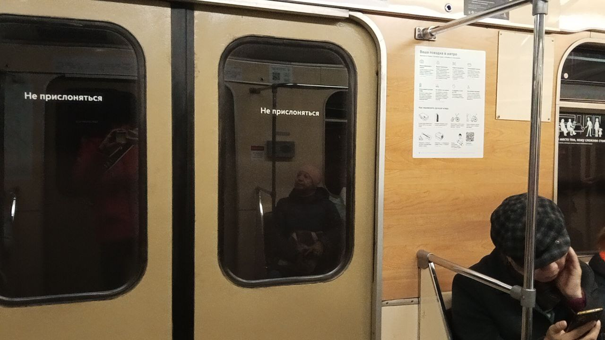
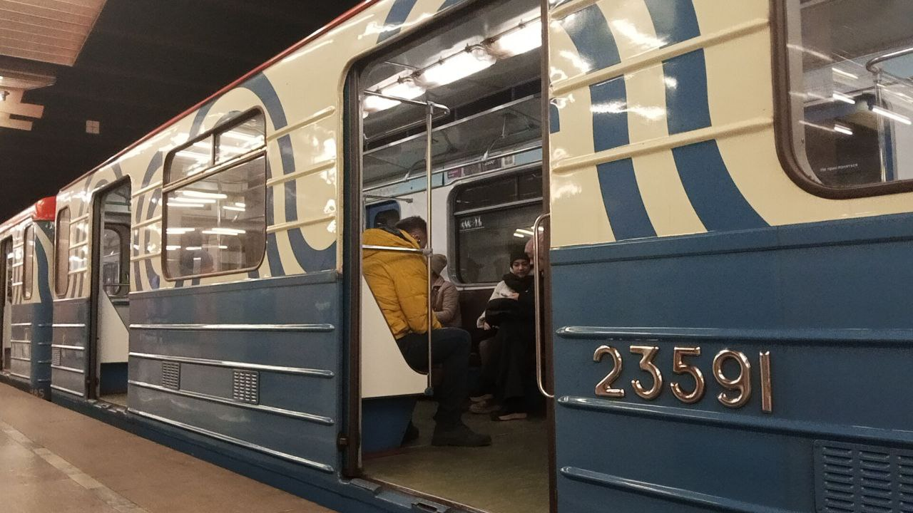
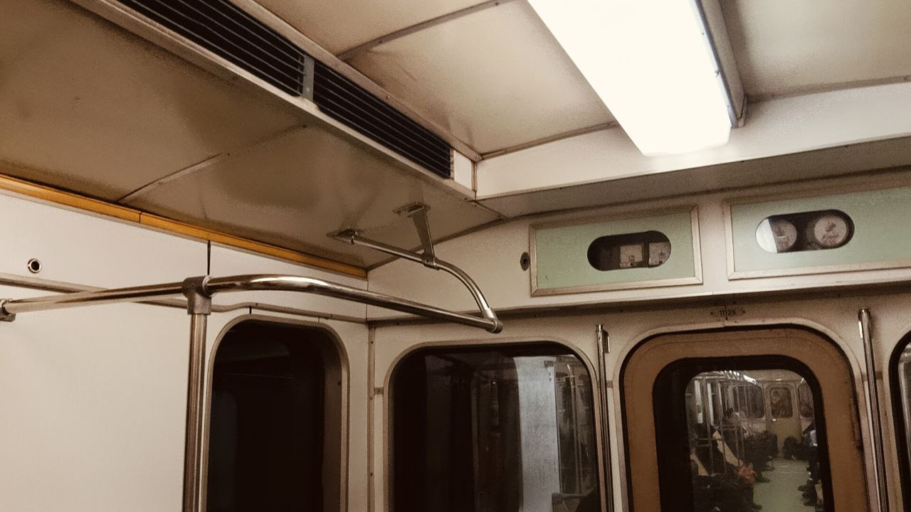
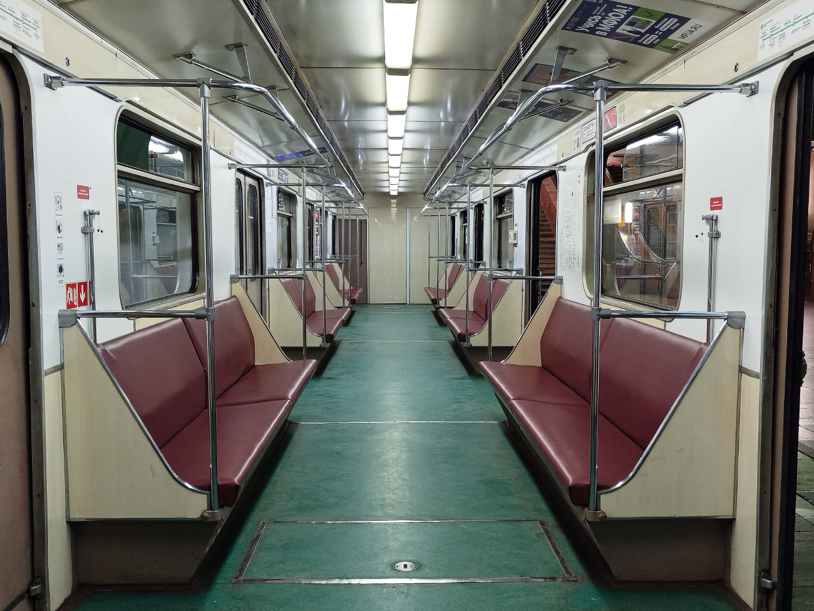
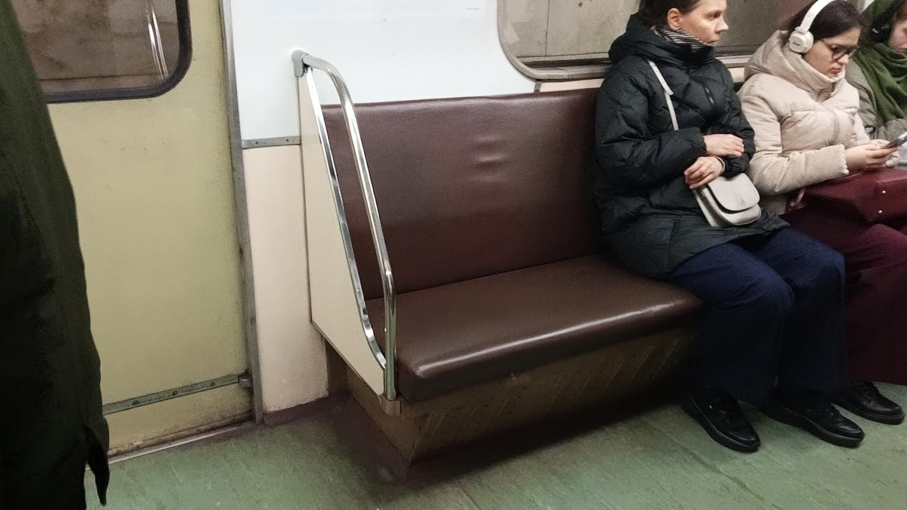
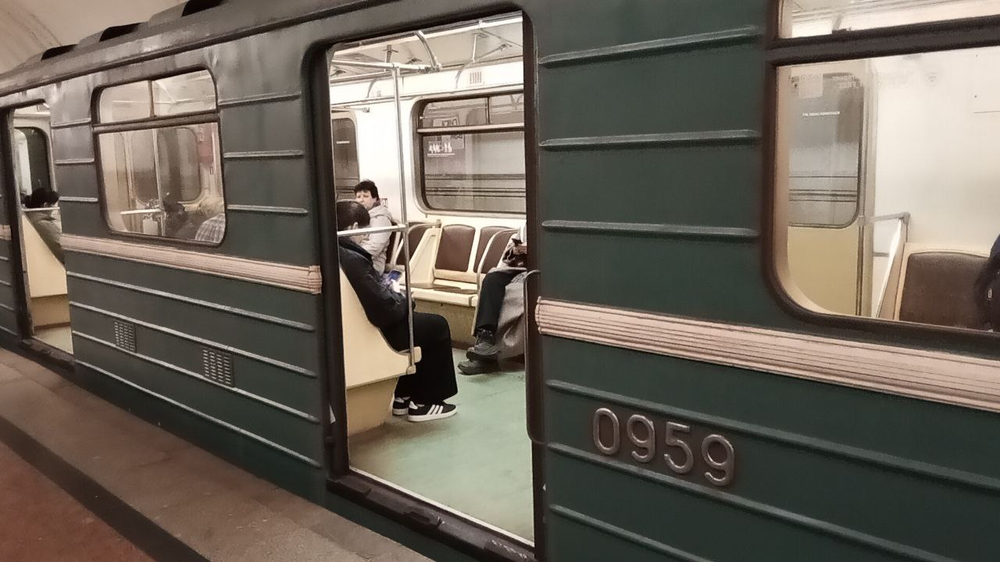

Разнообразие салонов номерных вагонов
Номерные — самый массовый тип вагонов в СССР и на постсоветском пространстве. Они производились на Мытищинском машиностроительном заводе (ММЗ), Ленинградском вагоностроительном заводе (ЛВЗ) и других предприятиях.
За долгую историю производства и эксплуатации в салонах этих вагонов появилось множество вариаций элементов — от цвета пластика до типа поручней. Ниже — обзор разнообразия, а в конце — список конкретных вагонов-уникумов.
Пластик в салонах
Цвет и текстура пластика зависели от завода-изготовителя, года выпуска и последующих ремонтов. Встречаются следующие варианты:
🟤 Рыжий под дерево
Классический тёмно-рыжий пластик «под дерево». Базовый вариант для большинства вагонов ММЗ до 2000-х годов.
⚪ Ленинградский белый мрамор
Уникальный белый пластик с текстурой «мрамор», характерный для вагонов ЛВЗ. Редкий вариант, встречается в сохранившихся вагонах.
🔵 Голубой
Ставился на ранние вагоны ММЗ. Также встречается в Нижнем Новгороде.
🔷 Синий
Ставился в некоторых вагонах ММЗ. Также встречается в Санкт-Петербурге.
💠 Бирюзовый
Встречался в вагонах ЛВЗ до капитального ремонта. После КР часто заменялся на белый пластик.
🟡 Жёлтый под дерево
Пластик под «жёлтое дерево» — вариант отделки, встречавшийся в отдельных вагонах.
🟢 Салатовый
Ставился на ранние вагоны ММЗ (начало 1980-х).
Важно: Наличие нестандартного пластика не всегда означает, что он заводской — часто он устанавливался при капитальных ремонтах. Оригинальный заводской пластик сохранился лишь в единичных вагонах.
Сиденья и диваны
В номерных вагонах встречаются как классические диваны, обшитые кожзаменителем, так и нестандартные сиденья. Ниже — основные варианты:
🟫 Бархатные диваны
Редкий вариант обивки — бархатные диваны. Встречаются в Минске.
🔵 Синие диваны
Редкие вагоны с мягкими сиденьями синего цвета. Встречаются в Москве.
🔴 Бордовые диваны
Вагоны с диванами бордового оттенка.
💺 Сиденья от Яузы
В нескольких вагонах 81-714 можно встретить сиденья от экспериментальных поездов «Яуза».
Также: В 81-717.5П применялись стеклопластиковые щёковины сидений, повторяющие форму сидений вагонов Е и Ем.
Освещение
🔆 Лампы ЛПВ-01
Классическое люминесцентное освещение с плафонами ЛПВ-01. Встречается в вагонах до капитальных ремонтов.
🔅 Лампы ЛПВ-02
Более поздний вариант люминесцентного освещения с плафонами ЛПВ-02. Устанавливался на серийные номерные вагоны.
💜 Светодиодная фиолетовая линия
Уникальное освещение — светодиодная световая линия фиолетового цвета. Встречается в отдельных вагонах.
Поручни
🪢 Вертикальные поручни
Стандартные вертикальные поручни. Устанавливались на большинство вагонов. Появились с 81** серии.
🪝 Поручни старого образца
Поручни с иной формой и расположением. Встречаются в сохранившихся вагонах.
Уникальные вагоны
Полный список вагонов с уникальными элементами салона, которые сохранились до наших дней:
| Тип элемента | Номера вагонов | Город |
|---|---|---|
| Пластик под «жёлтое дерево» + стойки «Ясень» | 0231 | Харьков |
| Голубой пластик | 11054 | Нижний Новгород |
| Голубой пластик | 23586–23593, 11119 | Москва |
| Синий пластик | 9050, 8085, 8199, 7862 | Санкт-Петербург |
| Бирюзовый пластик | 11068, 11055 | Санкт-Петербург |
| Бирюзовый пластик | 11052 | Нижний Новгород |
| Рыжий под дерево пластик | 1887, 1266, 2553, 2782 | Москва |
| Рыжий под дерево пластик | 11377 | Санкт-Петербург |
| Пластик под дерево + диваны | 11424 | Минск |
| Синие диваны | 11166, 0349, 0806, 0886 | Москва |
| Бордовые диваны | 11205, 11206, 10102, 11274 | Москва |
| Бархатные диваны | 11554 | Минск |
| Сиденья от Яузы | 1595, 1568, 0935 | Москва |
| Светодиодная фиолетовая линия | 11250 | Москва |
| Старое освещение (ЛПВ-01/02) | 11265–11269, 0756 | Москва |
| Поручни старого образца | 11265, 2523 | Москва |
| Оранжевые поручни | 0146 | Москва |
| «Ковидные» сиденья | 0963, 0959, 11139, 10093 | Москва |
«Ковидные номерные»
Особый тип вагонов, где между каждыми двумя сиденьями стоит перегородка с поручнем старого образца. Такие вагоны сделали примерно в 2010 году. Встречаются на Замоскворецкой (ЗЛ), Люблинско-Дмитровской (ЛДЛ) и, возможно, на Сокольнической (СокЛ) линиях.
Фотогалерея

📸 pfandrom

📸 pfandrom

📸 pfandrom

📸 MTarabskieMakarony10

📸 tomatikwwr

📸 pfandrom

📸 LASTOR_F

📸 pfandrom
Нажмите на фото для увеличения
«Номерные вагоны — это целая эпоха в истории метростроения. За десятилетия производства они вобрали в себя множество экспериментальных решений и уникальных деталей интерьера, которые делают каждый сохранившийся экземпляр по-своему особенным».